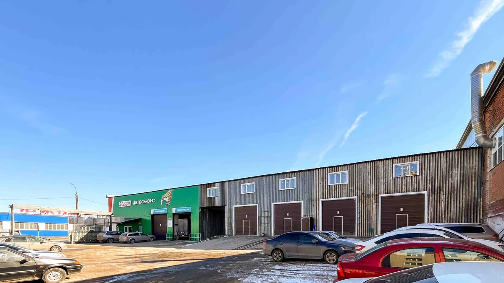
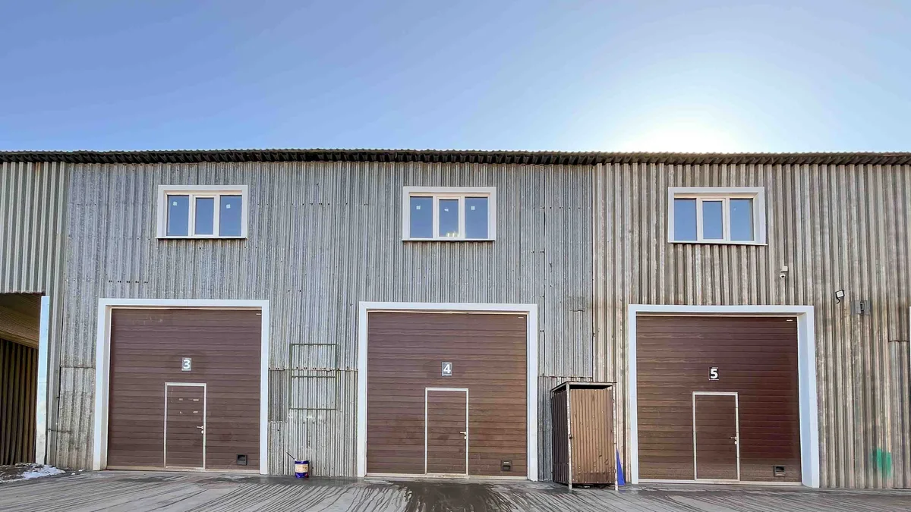
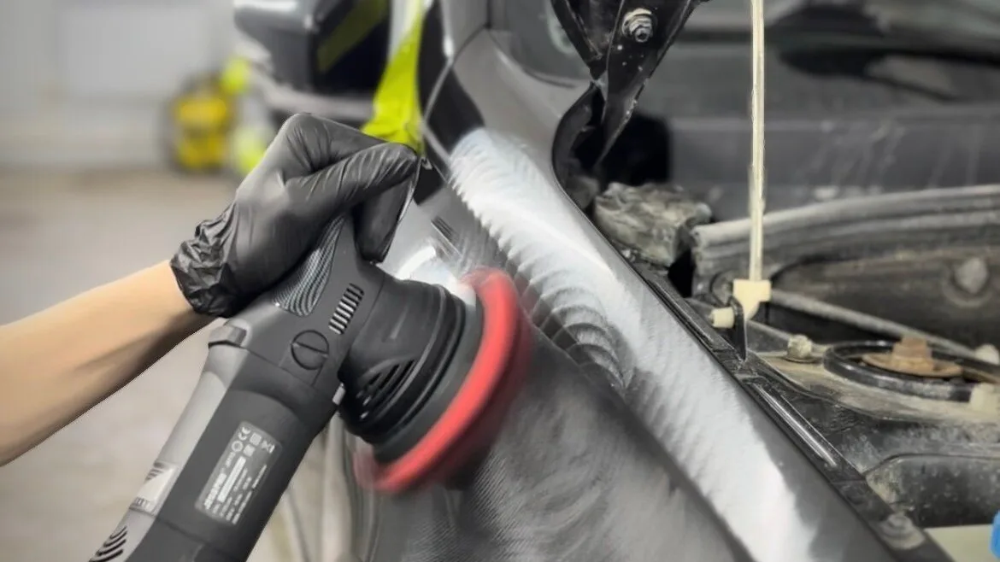
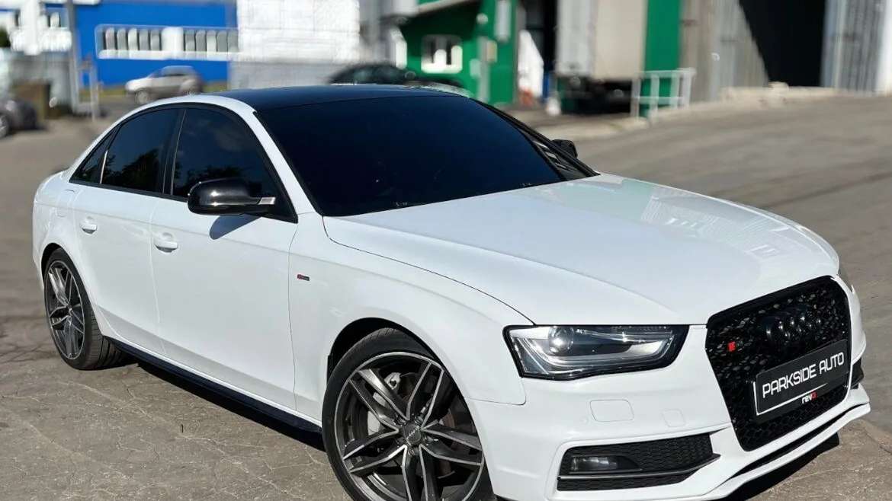

Автосервис в Чебоксарах · Пристанционная улица, 7 (боксы 3-6)
Автосервис в Чебоксарах: ремонт, ТО, сход-развал, тонировка
Parkside Auto на Пристанционной улице, 7: ремонт двигателя и ходовой, плановое ТО, сход-развал, шиномонтаж, тонировка и полировка. Удобная зона ожидания, запись на время.
- 5,0 на Яндекс Картах, 111 оценок
- Ежедневно с 09:00 до 19:00
- Зона ожидания для клиентов

Услуги автосервиса Parkside Auto в Чебоксарах
Входит
- Ремонт двигателя, ходовой и тормозной системы
- Плановое ТО, замена масла и ГРМ
- Сход-развал и шиномонтаж
- Компьютерная диагностика и автоэлектрика
- Заправка и ремонт автокондиционера
- Тонировка, полировка, детейлинг
Отдельно, если нужно
- Запчасти можно заказать через сервис
- Зона ожидания с чаем и кофе
- Работаем ежедневно с 09:00 до 19:00
- Адрес: Чебоксары, Пристанционная улица, 7, боксы 3-6
Цены на ремонт и обслуживание в Чебоксарах
Стоимость зависит от автомобиля и объёма работ. Мастер называет её после осмотра и согласует до начала ремонта.
Ремонт и обслуживание
- Плановое ТО и замена маслауточнить
- Ремонт ходовой частиуточнить
- Ремонт двигателяуточнить
- Компьютерная диагностикауточнить
Колёса и кузов
- Сход-развалуточнить
- Шиномонтажуточнить
- Тонировка стёколуточнить
- Полировка кузовауточнить
Точные цены уточняйте по телефону или в мессенджере перед визитом.
Как записаться в автосервис в Чебоксарах
- 01
Выбрали услугу и время
Укажите услугу, день и час в форме на сайте - заявка уйдёт в мессенджер. Марку, год и что беспокоит напишите в сообщении.
- 02
Подтвердили время
Время подтверждаем в мессенджере или по звонку: +7 (927) 855-05-00.
- 03
Диагностика и согласование
Мастер осматривает автомобиль, называет работы и стоимость. Дальше - по вашему решению.
- 04
Выдача автомобиля
Осмотрите результат вместе с мастером до оплаты.



Что пишут клиенты Parkside Auto
Обслуживают все машины семьи
«На протяжении трех лет все свои автомобили и авто отца обслуживаю исключительно у парксайдов. Занимаются абсолютно всем» - Иван Яковлев, 24 мая 2025.
Быстро и качественно
«Менял термостат, и ребята отработали просто на высшем уровне. Всё сделали чётко, быстро и очень качественно» - Алексей Я., 12 сентября.
Грамотные специалисты
«Ребята молодцы, знают свое дело, грамотные специалисты, работу выполнили быстро и качественно» - Дмитрий П., 11 февраля.
Отзывы с Яндекс.Карт
«На протяжении трех лет все свои автомобили и авто отца обслуживаю исключительно у парксайдов. Занимаются абсолютно всем. За это время выручали меня ни раз.»
Иван Яковлев · 24 мая 2025
«Хочу выразить огромную благодарность автосервису! Менял термостат, и ребята отработали просто на высшем уровне. Всё сделали чётко, быстро и очень качественно.»
Алексей Я. · 12 сентября
«Сегодня первый раз прошел ТО в данном автосервисе, а также поменял тормозные колодки. Ребята молодцы, знают свое дело, грамотные специалисты, работу выполнили быстро и качественно.»
Дмитрий П. · 11 февраля
Отзывы с карточки на Яндекс.Картах, без правок.
Частые вопросы
Какие работы делаете в Чебоксарах?
Ремонт двигателя, ходовой и тормозов, плановое ТО, замена ГРМ и масла, сход-развал, шиномонтаж, автоэлектрика, тонировка и полировка.
Нужно ли записываться заранее?
Лучше записаться: выберите услугу, день и время в форме на сайте или напишите нам в мессенджер.
Сколько стоит ремонт?
Стоимость зависит от автомобиля и объёма работ. Мастер называет её после осмотра, до начала ремонта.
Можно ли подождать в сервисе?
Да, для клиентов есть зона ожидания.
Когда вы работаете?
Ежедневно с 09:00 до 19:00.
Где находится автосервис?
Чебоксары, Пристанционная улица, 7, боксы 3, 4, 5 и 6.
Запишитесь на ТО или ремонт
- Адрес
- Пристанционная улица, 7 (боксы 3-6), Чебоксары
- Часы
- Пн-Вс 09:00-19:00
- Телефон
- +7 (927) 855-05-00